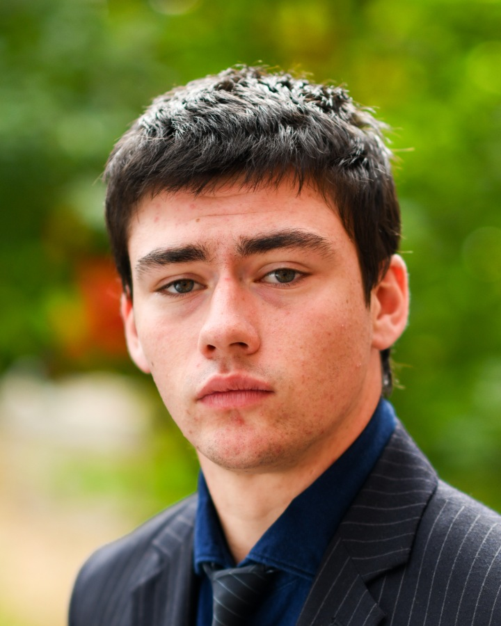
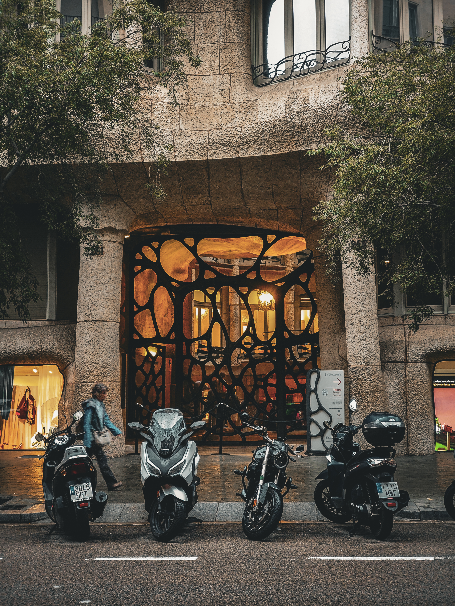
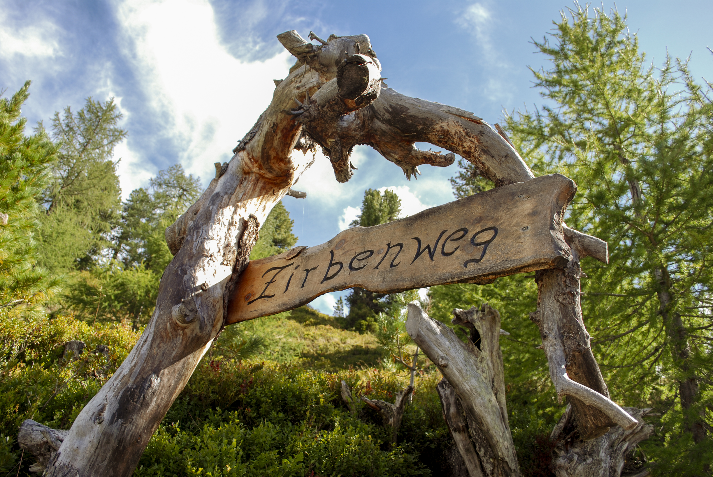
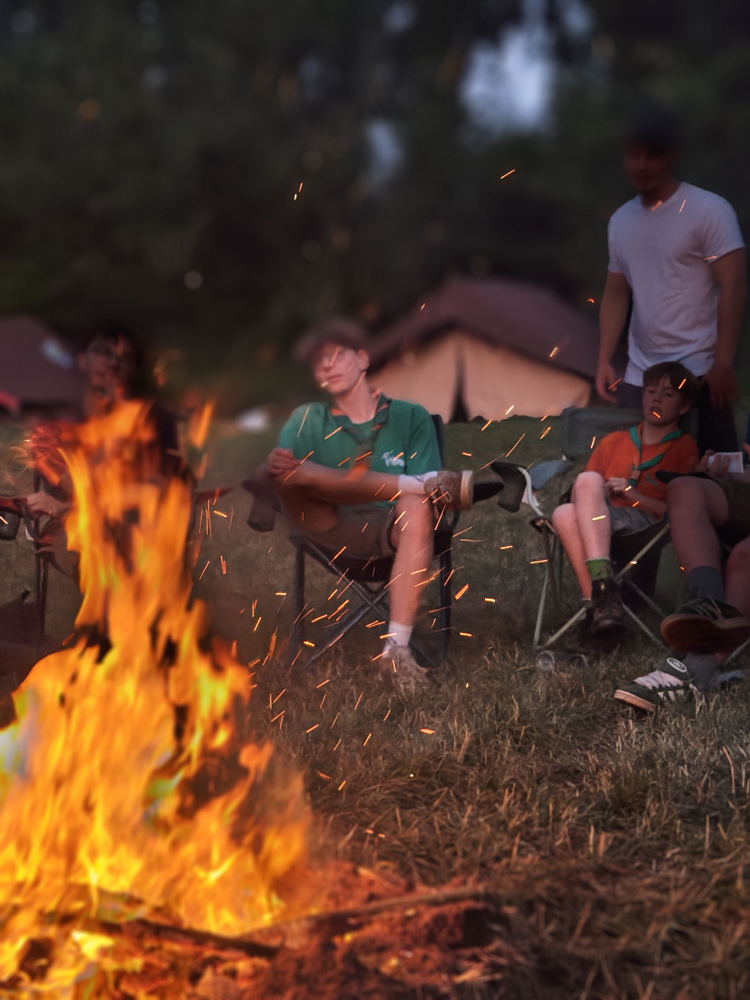

About me
Hi, I'm Jochen Berghmans. I'm a final-year Crossmedia student at Don Bosco Sint-Denijs-Westrem in Belgium, with a strong interest in graphic design, digital media and technical production.
As a monitor at Fab Lab Erpe-Mere and a leader at Scouts Kievit, I have developed my communication and leadership skills. I'm creative, responsible and happy to take initiative.
Languages: Dutch (native), English (very good), French (fair).
Hobbies
- Scouts
- Photography
- Swimming
- Hiking
- Gaming
- Time with friends
Photography
A selection of my photos, edited with Adobe Lightroom and Photoshop.


